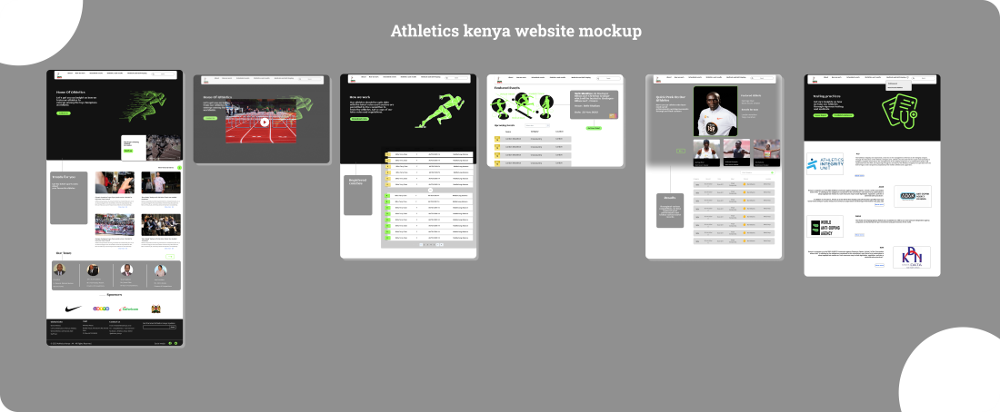

Athletics Kenya website re-design

Introduction
- Category:Website Re-design
- Project date: May, 2022
- Case Studymy case full study
Athletics Kenya website re-design is a project that was done on the Game-Changers UI/UX Bootcamp
The problem: Fans interested in athletics need to find important information such as athletes statistics,
competition replays, results , scheduled competitions, engaging content and contact information on how to reach
out and become an athlete if they are interested. For those trying to join in the numerous competitions, they need
to access schedules and locations for the next trials and the process they have to go through first before participation
Solution: Athletics Kenya Website re-design with enough information and news to keep sports fanatics interested and to provide clear
details on how to join the athletics team.
My Role: As a part of the UI/UX team , I was responsible for the :
⁕Research
⁕Ideation
⁕Information Architechture
⁕User Interface and visual design
Through out the project, I incoporated invaluable feedback from various individuals which provided me with a clear guide of
how to conduct my research and design.
My tools:
✔Sticky notes ✔Empathy map template
✔Notebooks ✔Pens
✔Figma
✔illustrator
✔User story template
My Process
My process employed a design thinking mindset, in which I focused first on learning about the problem space, through the discovery stages of understanding and empathy, then synthesizing what I had learned to define and frame the problem and finally creating the solution.

PHASE 1: LEARNING ABOUT THE PROBLEM
A. Understand
◆Secondary research
Looking into existing secondary research from existing UX research on sports blogs and articles to identify recent trends and patterns. Some notible insights marked increases in:▹Athletes winning highlights to keep user interested
▹Attractive design, easy to use, and look good no matter what device visitors use
Here is a quote from Paul Andrew's blog on Mar 11th, 2022 which gave me a sense of direction and understanding on sports fans
"Whether you have a sports team website, a fan website, or an online sports magazine site, one thing is certain: your website needs to tell the visitors what they can expect to find and allow sports fans to consume and engage with the content. A sports website also needs to make it easy for visitors to find important information..."
◆Comparative analysis
I followed up with a comparative analysis.B. Empathize
◆Primary research
I moved to primary research after a good understanding of the trends in sports oriented websites where I could learn directly from people through interviews and one on one talks.Prior to setting this up ,I developed some goals:▹Discover their main objectives while navigating a sports oriented website.
▹Determine the type of engaging content that would grab their attention.
I found participants who are interested in athletics and had them answer the following questions:
What is the first step you would take if wanted to join athletics?
How do you keep yourself updated with athletics news?
What type of information would you expect in a sports website?
From the following questions,I determined what type of information(It is still data at this pointüòÖ) I would need to set up on the website and noted it down
C. Define
◆ Affinity map
I set to work creating an affinity map after synthesizing my research notesThree themes emerged:
*Focus on engaging content
*Focus on proper organization
*Focus on attractive design no matter what device your visitors use
◆ Empathy maps
I created empathy maps to organize information into what people feel.◆ Persona
Personas were created from the empathy map which included individual goals,motivations,needs ,motivations,frustrations and environment◆ Problem statement
Finally the synthesis of the information also gave me the opportunity to redefine the problem into a more adressable problem by using the 4 W's technique which is:Who is impacted by the issues on the website?: The sports fanatics and people trying to be athletes.
What is the issue?: By navigating through the site, there is no engaging information about athletes that fans would be interested in. There is also no precise information or schedules on how and where to participate and train to become an athlete.
Where will they use the website?: The user wants to use the website at any location while trying to access schedules and information hence it is a purely digital issue.
Why is this important?: The user will benefit by finding important information listed within the website without having to go to search sites and other contacts in order to minimise tasks and effort which is essential. :
Sports fanatics interested in athletics need to find important information such as athletes statistics, competition replays, results , scheduled competitions, engaging content and contact information on how to reach out and become an athlete if they are interested. For those trying to join in the numerous competitions, they need to access schedules and locations for the next trials and the process they have to go through first before participation
◆ How might we...?
I formulated how might we questions to adress the core element.How might we make Athletics Kenya website easier to navigate?
How might we make Athletics Kenya website engaging to users?
PHASE 2: CREATING A SOLUTION
D. Ideate
◆ The idea
Re-design the Athletics Kenya website with important information such as athlete profiles, game results, game replays, and more.With proper organization ,an attractive design and easy to use.Prototype
◆ User Stories
The first step is building a minimum viable product using User Stories,actions and epics.◆ Information architecture
I created a general structure using a user flow diagram. The improvised revisions would be later added to high fidelity prototype◆ Sketching
I sketched out the screens needed for the app and turned it into low fidelity prototypes◆ Wireframes
I developed some low fidelity wireframes for more editing and feedback from the bootcamp mentor. Any changes would be noted down and changed to better revisions and wireflows◆ Style Guide
I created a style guide to illustrate the typefaces,colors and various UI elements that were applied in the design system. I wanted to achieve a fun, engaging and organized look .◆ Mockup
We developed a high fidelity mockup that would be the base of the prototype
Test
◆Usability testing
Some people did not have the XD app installed on their phones so I had them testing on the application on the laptop